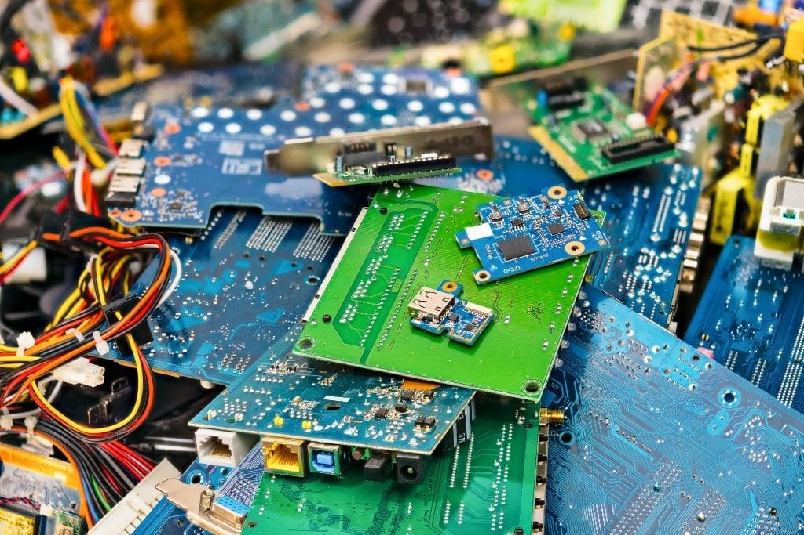
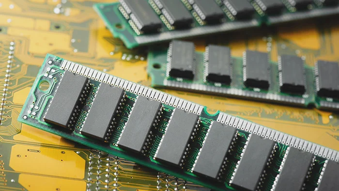
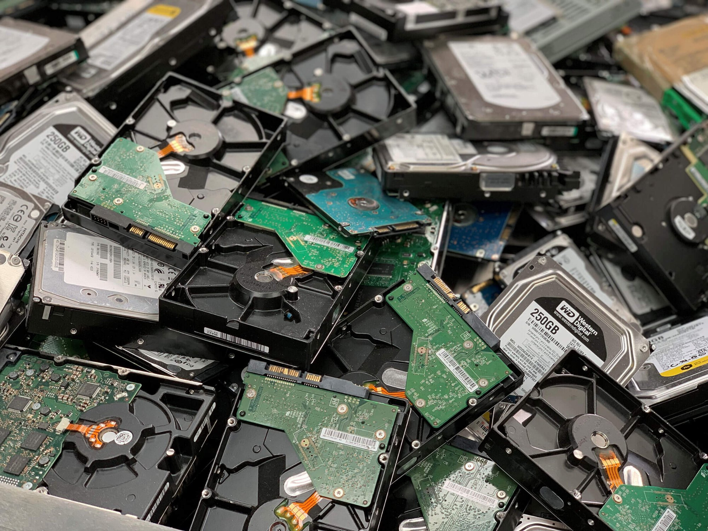
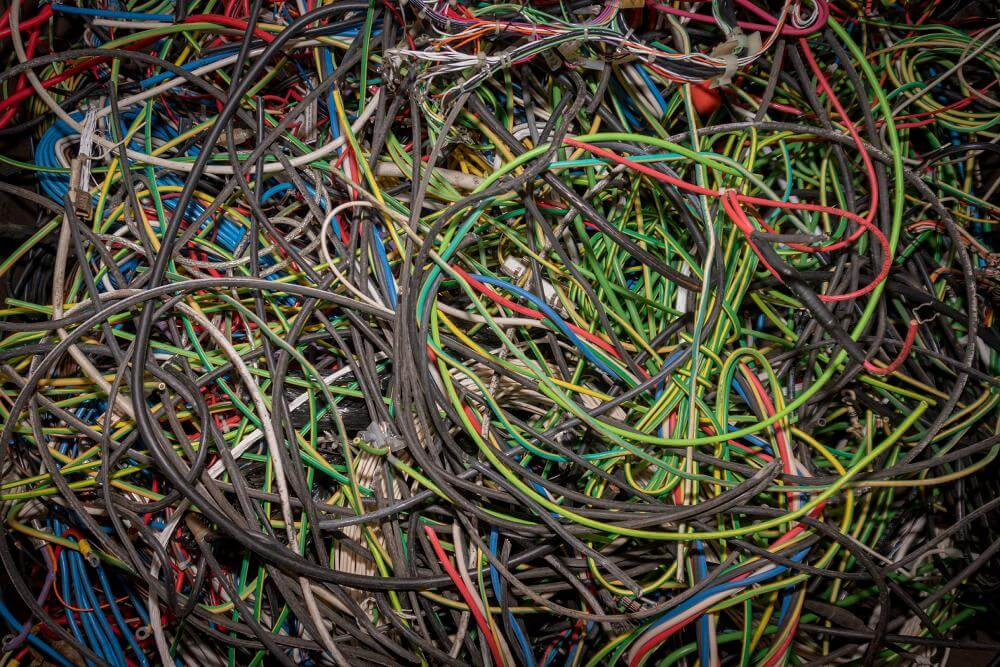

E-Waste Problem
Every year millions of electrical and electronic devices are
discarded as products break or become obsolete and are thrown
away. These discarded devices are considered e-waste and can
become a threat to health and the environment if they are not
disposed of and recycled appropriately.
Electronic waste (e-waste) is one of the fastest growing solid
waste streams in the world. Less than a quarter of e-waste
produced globally in 2022 was known to be formally recycled;
however, e-waste streams contain valuable and finite resources
that can be reused if they are recycled appropriately.
RAM
contains a tiny amounts of gold in the connectors and internal
bonding wires. Not only RAM, but GPU,CPU and motherboards also
yield gold.

HDD
The magnets from a HDD/ Hard Disk Drive can be salvaged and used
for other things such for hanging notes in refrigerators and etc.
Magnets like this are typically very strong. It can also be used
for magnet fishing

Copper Wires
Copper is a Valuable metal found in all E waste, especially computer parts. By collecting
copper you can either sell it for a profit or create new products with it. One
of the benefits of copper is that it uses significantly less energy than
producing it from a virgin ore

 E-Waste Reclamation Guide
E-Waste Reclamation Guide